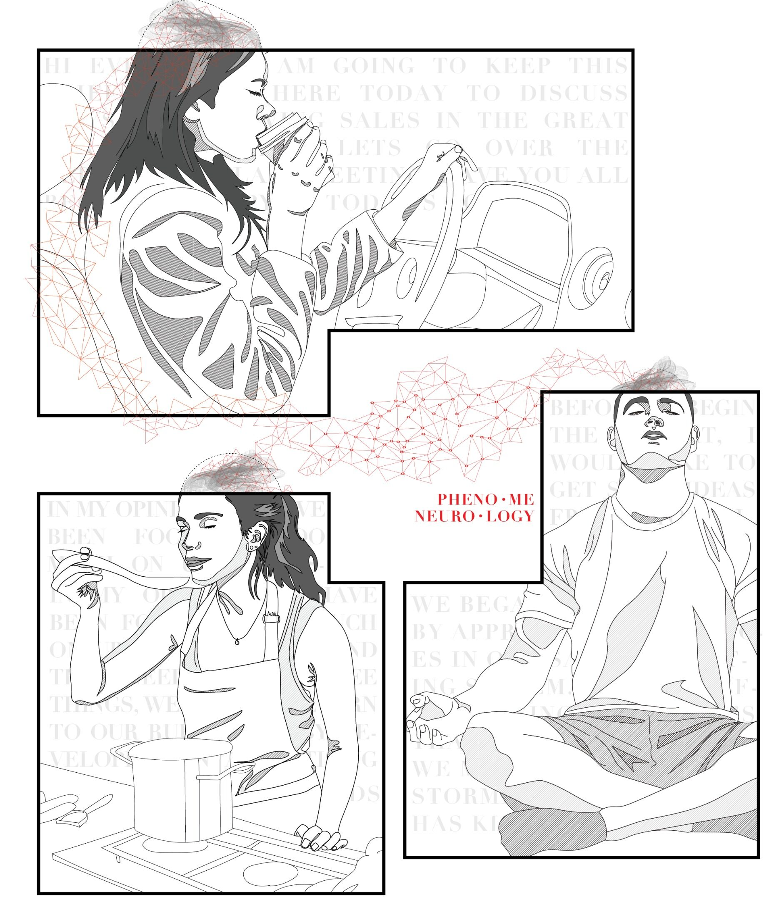
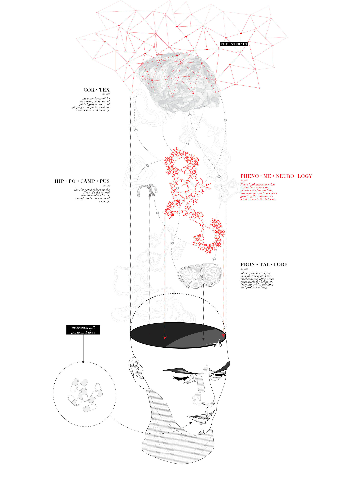
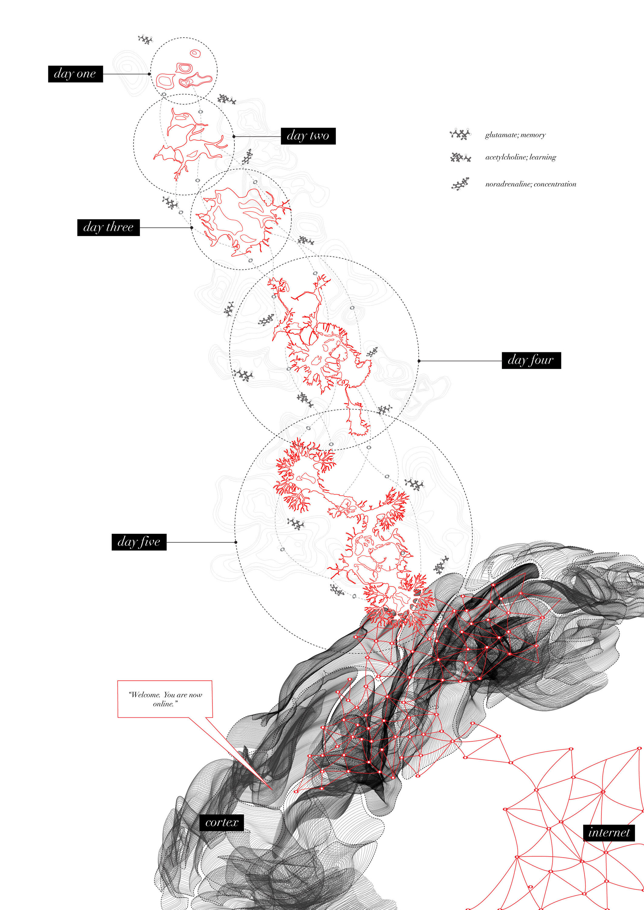

2018
PHENOMENEUROLOGY
the office that stays with you wherever you go
CONTEXT
Non-Architecture Office Competition
LOCATION
The Human Brain
SOFTWARE
Illustrator
COLLABORATORS
Ruotao Wang

Introducing the revolutionary piece of synthetic neurology - Phenomeneurology. This all-new product allows for
100% productivity, providing you time to do whatever you wish. By connecting the cortex, hippocampus and
frontal lobes, a direct signal network emerges between critical thinking organs and those dealing with
information and retrieval.
The product is simple to use: simply ingest one pill and the virus within the tablet will travel through your
bloodstream to your brain. Here it will begin to grow into synthetic neuron tissue, which when extended to
reach the cortex, will begin to emit radio waves through empty grey matter in the cortex giving your mind
access to the Internet.
In the 21st century architects were designing spaces to create sensations. In the 22nd century, we design
sensations directly using neural infrastructures. Rather than an office you can inhabit, we have now created
an office that inhabits you without the need of transport. This technology allows you to collaborate with your
coworkers straight from the comfort of your own home.
Get yours today!
Possible Side Effects:
Hallucinations, delusions, vomiting, coma, momentary or permanent paralysis, and/or death If you experience
any of these effects please stay calm and have faith in technology.

